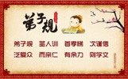

弟子规 |
|||
| zǒng xù | |||
总叙 |
|||
| dì zǐ guī | shèng rén xùn | shǒu xiào tì | cì jǐn xìn |
| 弟子规 | 圣人训 | 首孝弟 | 次谨信 |
| fàn ài zhòng | ér qīn rén | yǒu yú lì | zé xué wén |
| 泛爱众 | 而亲仁 | 有余力 | 则学文 |
【解释】《弟子规》这本书，是依据至圣先师孔子的教诲而编成的生活规范。首先在日常生活中，要做到孝顺父母，友爱兄弟姐妹。其次在一切日常生活言语行为中要小心谨慎，要讲信用。和大众相处时要平等博爱，并且亲近有仁德的人，向他学习，这些都是很重要非做不可的事，如果做了之后，还有多余的时间精力，就应该好好的学习六艺等其他有益的学问。 |
|||
| rù zé xiào | |||
入则孝 |
|||
| fù mǔ hū | yìng wù huǎn | fù mǔ mìng | xíng wù lǎn |
| 父母呼 | 应勿缓 | 父母命 | 行勿懒 |
| fù mǔ jiào | xū jìng tīng | fù mǔ zé | xū shùn chéng |
| 父母教 | 须敬听 | 父母责 | 须顺承 |
【解释】父母呼唤，应及时回答，不要慢吞吞的很久才应答，父母有事交代，要立刻动身去做，不可拖延或推辞偷懒。父母教导我们做人处事的道理，是为了我们好，应该恭敬的聆听。做错了事，父母责备教诫时，应当虚心接受，不可强词夺理，使父母亲生气、伤心。（君子闻过则喜，小人闻过则怒。） |
|||
| dōng zé wēn | xià zé jìng | chén zé xǐng | hūn zé dìng |
| 冬则温 | 夏则凊 | 晨则省 | 昏则定 |
| chū bì gào | fǎn bì miàn | jū yǒu cháng | yè wú biàn |
| 出必告 | 反必面 | 居有常 | 业无变 |
【解释】侍奉父母要用心体贴，在二十四孝故事里，九岁的黄香，为了让父亲安心睡眠，夏天睡前会帮父亲把床铺扇凉，冬天寒冷时会为父亲温暖被窝，实在值得我们学习。早晨起床之后，应该先探望父母，并向父母请安问好。下午回家之后，要将今天在外的情况告诉父母，向父母报平安，使老人家放心。外出离家时，须告诉父母要到哪里去，回家后还要当面禀报父母，让父母安心。平时生活起居，要保持正常有规律，做事有常规，不要任意改变，以免父母忧虑。 |
|||
| shì suī xiǎo | wù shàn wéi | gǒu shàn wéi | zǐ dào kuī |
| 事虽小 | 勿擅为 | 苟擅为 | 子道亏 |
| wù suī xiǎo | wù sī cáng | gǒu sī cáng | qīn xīn shāng |
| 物虽小 | 勿私藏 | 苟私藏 | 亲心伤 |
【解释】纵然是小事，也不要任性，擅自作主，而不向父母禀告。如果任性而为，容易出错，就有损为人子女的本分，因此让父母担心，是不孝的行为。公物虽小，也不可以私自收藏占为己有。如果私藏，品德就有缺失，父母亲知道了一定很伤心。 |
|||
| qīn suǒ hào | lì wèi jù | qīn suǒ wù | jǐn wèi qù |
| 亲所好 | 力为具 | 亲所恶 | 谨为去 |
| shēn yǒu shāng | yí qīn yōu | dé yǒu shāng | yí qīn xiū |
| 身有伤 | 贻亲忧 | 德有伤 | 贻亲羞 |
| qīn ài wǒ | xiào hé nán | qīn zēng wǒ | xiào fāng xián |
| 亲爱我 | 孝何难 | 亲憎我 | 孝方贤 |
【解释】父母亲所喜好的东西，应该尽力去准备；父母所厌恶的事物，要小心谨慎的去除（包含自己的坏习惯）。要爱护自己的身体，不要使身体轻易受到伤害，让父母亲忧虑。（《孝经》子曰：“身体发肤，受之父母，不敢毁伤，孝之始也”）。要注重自己的品德修养，不可以做出伤风败德的事，使父母亲蒙受耻辱。当父母亲喜爱我们的时候，孝顺是很容易的事；当父母亲不喜欢我们，或者管教过于严厉的时候，我们一样孝顺，而且还能够自己反省检点，体会父母的心意，努力改过并且做得更好，这种孝顺的行为最是难能可贵。 |
|||
| qīn yǒu guò | jiàn shǐ gēng | yí wú sè | róu wú shēng |
| 亲有过 | 谏使更 | 怡吾色 | 柔吾声 |
| jiàn bú rù | yuè fù jiàn | hào qì suí | tà wú yuàn |
| 谏不入 | 悦复谏 | 号泣随 | 挞无怨 |
【解释】父母亲有过错的时候，应小心劝导改过向善，劝导时态度要诚恳，声音必须柔和，并且和颜悦色，（《论语》子夏问孝。子曰：“色难。”）。如果父母不听规劝，要耐心等待，一有适当时机，例如父母情绪好转或是高兴的时候，再继续劝导；如果父母仍然不接受，甚至生气，此时我们虽难过得痛哭流涕，也要恳求父母改过，纵然遭遇到责打，也无怨无悔，以免陷父母于不义，使父母一错再错，铸成大错。 |
|||
| qīn yǒu jí | yào xiān cháng | zhòu yè shì | bù lí chuáng |
| 亲有疾 | 药先尝 | 昼夜侍 | 不离床 |
| sāng sān nián | cháng bēi yè | jū chù biàn | jiǔ ròu jué |
| 丧三年 | 常悲咽 | 居处变 | 酒肉绝 |
| sāng jìn lǐ | jì jìn chéng | shì sǐ zhě | rú shì shēng |
| 丧尽礼 | 祭尽诚 | 事死者 | 如事生 |
【解释】父母亲生病时，子女应当尽心尽力的照顾，一旦病情沉重时，更要昼夜服侍，不可以随便离开。父母去世之后，守孝期间（古礼三年），要常常追思、感怀父母教养的恩德。自己的生活起居必须调整改变，不能贪图享受，应该戒绝酒肉（请参考《地藏菩萨本愿经》，孝子应如何给往生者修福）。办理父母亲的丧事要哀戚合乎礼节，不可草率马虎，也不可以为了面子铺张浪费，才是真孝顺。（《论语》：生，事之以礼，死，葬之以礼，祭之以礼。）祭拜时应诚心诚意，对待已经去世的父母，要如同生前一样恭敬。（《论语》：祭如在，祭神如神在。） |
|||
| chū zé tì | |||
出则弟 |
|||
| xiōng dào yǒu | dì dào gōng | xiōng dì mù | xiào zài zhōng |
| 兄道友 | 弟道恭 | 兄弟睦 | 孝在中 |
| cái wù qīng | yuàn hé shēng | yán yǔ rěn | fèn zì mǐn |
| 财物轻 | 怨何生 | 言语忍 | 忿自泯 |
【解释】当哥哥姐姐的要友爱弟妹，作弟妹的要懂得恭敬兄姐，兄弟姐妹能和睦相处，一家人和乐融融，父母自然欢喜，孝道就在其中了。与人相处不斤斤计较财物，怨恨就无从生起。言语能够包容忍让，多说好话，不说坏话，忍住气话，不必要的冲突、怨恨的事情自然消失不生。（言语为福祸之门。孔门四科有：德行、言语、政事、文学。可见言语之重要。） |
|||
| huò yǐn shí | huò zuò zǒu | zhǎng zhě xiān | yòu zhě hòu |
| 或饮食 | 或坐走 | 长者先 | 幼者后 |
| zhǎng hū rén | jí dài jiào | rén bù zài | jǐ jí dào |
| 长呼人 | 即代叫 | 人不在 | 已即到 |
【解释】良好的生活教育，要从小培养；不论用餐就座或行走，都应该谦虚礼让，长幼有序，让年长者优先，年幼者在后。长辈有事呼唤人，应代为传唤，如果那个人不在，自己应该主动去询问是什么事？可以帮忙就帮忙，不能帮忙时则代为转告。（孙中山先生说：“人生以服务为目的，不以夺取为目的。”青少年守则明言：助人为快乐之本。） |
|||
| chēng zūn zhǎng | wù hū míng | duì zūn zhǎng | wù xiàn néng |
| 称尊长 | 勿呼名 | 对尊长 | 勿见能 |
| lù yù zhǎng | jí qū yī | zhǎng wú yán | tuì gōng lì |
| 路遇长 | 疾趋揖 | 长无言 | 退恭立 |
| qí xià mǎ | chéng xià jū | guò yóu dài | bǎi bù yú |
| 骑下马 | 乘下车 | 过犹待 | 百步余 |
【解释】称呼长辈，不可以直呼姓名，在长辈面前，要谦虚有礼，不可以炫耀自己的才能；路上遇见长辈，应向前问好，长辈没有事时，即恭敬退后站立一旁，等待长辈离去。古礼：不论骑马或乘车，路上遇见长辈均应下马或下车问候，并等到长者离去稍远，约百步之后，才可以离开。现解：不论骑车或乘车，路上遇见长辈，若方便停车，应下车问候，并询问是否需要搭便车。若长辈要离去，则目视长辈离去约百步之遥，才可以离开。这是敬老尊贤的表现。 |
|||
| zhǎng zhě lì | yòu wù zuò | zhǎng zhě zuò | mìng nǎi zuò |
| 长者立 | 幼勿坐 | 长者坐 | 命乃坐 |
| zūn zhǎng qián | shēng yào dī | dī bù wén | què fēi yí |
| 尊长前 | 声要低 | 低不闻 | 却非宜 |
| jìn bì qū | tuì bì chí | wèn qǐ duì | shì wù yí |
| 进必趋 | 退必迟 | 问起对 | 视勿移 |
【解释】与长辈同处，长辈站立时，晚辈应该陪着站立，不可以自行就坐，长辈坐定以后，吩咐坐下才可以坐。与尊长交谈，声音要柔和适中，回答的音量太小让人听不清楚，也是不恰当的。有事要到尊长面前，应快步向前；退回去时，必须稍慢一些才合乎礼节。当长辈问话时，应当专注聆听，眼睛不可以东张西望，左顾右盼。 |
|||
| shì zhū fù | rú shì fù | shì zhū xiōng | rú shì xiōng |
| 事诸父 | 如事父 | 事诸兄 | 如事兄 |
【解释】对待叔叔、伯伯等尊长如同对待自己的父亲一般孝顺恭敬；对待同族的兄长，如堂兄姐、表兄姐，要如同对待自己的兄长一样友爱尊敬。 |
|||
| jǐn | |||
谨 |
|||
| zhāo qǐ zǎo | yè mián chí | lǎo yì zhì | xī cǐ shí |
| 朝起早 | 夜眠迟 | 老易至 | 惜此时 |
| chén bì guàn | jiān shù kǒu | biàn niào huí | zhé jìng shǒu |
| 晨必盥 | 兼漱口 | 便溺回 | 辄净手 |
【解释】早上要早点起床，晚上也别很早就睡觉。因为时光宝贵，转瞬即逝，应当好好珍惜和努力。（少壮不努力，老大徒悲伤。）早晨起床后，必须先洗脸、刷牙、漱口使精神清爽，让一天有一个好的开始。大小便后，一定要洗手，养成良好的卫生习惯，才能确保健康。 （防止肠病毒，要学会洗手，手心、手背、指缝间都要仔细搓洗） （陶渊明诗：盛年不重来，一日难再晨。及时当勉励，岁月不待人。） |
|||
| guān bì zhèng | niǔ bì jié | wà yǔ lǚ | jù jǐn qiè |
| 冠必正 | 纽必结 | 袜与履 | 俱紧切 |
| zhì guān fú | yǒu dìng wèi | wù luàn dùn | zhì wū huì |
| 置冠服 | 有定位 | 勿乱顿 | 致污秽 |
【解释】要注重服装仪容的整齐清洁，戴帽子要戴端正，衣服扣子要扣好，袜子穿平整，鞋带应系紧，否则容易被绊倒，一切穿着以稳重端庄为宜。回家后衣、帽、鞋、袜都要放置定位，避免造成脏乱，要用的时候又要找半天。（大处着眼，小处着手，养成良好的生活习惯，是成功的一半。） |
|||
| yī guì jié | bú guì huá | shàng xún fèn | xià chèn jiā |
| 衣贵洁 | 不贵华 | 上循分 | 下称家 |
| duì yǐn shí | wù jiǎn zé | shí shì kě | wù guò zé |
| 对饮食 | 勿拣择 | 食适可 | 勿过则 |
| nián fāng shào | wù yǐn jiǔ | yǐn jiǔ zuì | zuì wéi chǒu |
| 年方少 | 勿饮酒 | 饮酒醉 | 最为丑 |
【解释】穿衣服需注重整洁，不必讲究昂贵、名牌、华丽。穿着应考量自己的身份及场合，更要衡量家中的经济状况，才是持家之道。（不要为了面子，更不要让虚荣心作主，无谓的开销就是浪费。） 日常饮食要注意营养均衡，多吃蔬菜水果，少吃肉，不要挑食，不可以偏食，三餐常吃八分饱，避免过量，以免增加身体的负担，危害健康。 饮酒有害健康，要守法，青少年未成年不可以饮酒。成年人饮酒也不要过量，试看醉汉疯言疯语，丑态毕露，会惹出多少是非？ （《论语》：食不厌精，脍不厌细。夫子劝勉我们：食物不要过分讲求精美，烹调不要过分要求细致。） 老子说：圣人为腹不为目。饮食是为了吃饱肚子，不是为了满足口目。当今的文明病例如：癌症、糖尿病…等多为营养过多，与营养失衡所造成。应该注意到那些过分加工、太精致的食品，都含有化学添加物，有害健康，不宜食用。 |
|||
| bù cōng róng | lì duān zhèng | yī shēn yuán | bài gōng jìng |
| 步从容 | 立端正 | 揖深圆 | 拜恭敬 |
| wù jiàn yù | wù bǒ yǐ | wù jī jù | wù yáo bì |
| 勿践阈 | 勿跛倚 | 勿箕踞 | 勿摇髀 |
【解释】走路时步伐应当从容稳重，不慌不忙，不急不缓；站立时要端正有站相，须抬头挺胸，精神饱满，不可以弯腰驼背，垂头丧气。（立如松，行如风，坐如钟，卧如弓。） 问候他人时，不论鞠躬或拱手要真诚恭敬，不能敷衍了事。进门时脚不要踩在门槛上，站立时身体也不要站得歪歪斜斜的，坐的时候不可以伸出两腿，腿更不可以抖动，这些都是很轻浮、傲慢的举动，有失君子风范。 |
|||
| huǎn jiē lián | wù yǒu shēng | kuān zhuǎn wān | wù chù léng |
| 缓揭帘 | 勿有声 | 宽转弯 | 勿触棱 |
| zhí xū qì | rú zhí yíng | rù xū shì | rú yǒu rén |
| 执虚器 | 如执盈 | 入虚室 | 如有人 |
| shì wù máng | máng duō cuò | wù wèi nán | wù qīng lüè |
| 事勿忙 | 忙多错 | 勿畏难 | 勿轻略 |
| dòu nào chǎng | jué wù jìn | xié pì shì | jué wù wèn |
| 斗闹场 | 绝勿近 | 邪僻事 | 绝勿问 |
【解释】进入房间时，不论揭帘子、开门的动作都要轻一点、慢一些，避免发出声响。在室内行走或转弯时，应小心不要撞到物品的棱角，以免受伤。拿东西时要注意，即使是拿着空的器具，也要像里面装满东西一样，小心谨慎以防跌倒或打破。进入无人的房间，也要像有人在一样，不可以随便。 做事不要急急忙忙、慌慌张张，因为忙中容易出错，不要畏苦怕难而犹豫退缩，也不可以草率，随便应付了事。 凡是容易发生争吵打斗的不良场所，如赌博、色情等是非之地，要勇于拒绝，不要接近，以免受到不良的影响。一些邪恶下流，荒诞不经的事也要谢绝，不听、不看，不要好奇的去追问，以免污染了善良的心性。 |
|||
| jiāng rù mén | wèn shú cún | jiāng shàng táng | shēng bì yáng |
| 将入门 | 问孰存 | 将上堂 | 声必扬 |
| rén wèn shuí | duì yǐ míng | wú yǔ wǒ | bù fēn míng |
| 人问谁 | 对以名 | 吾与我 | 不分明 |
| yòng rén wù | xū míng qiú | tǎng bù wèn | jí wéi tōu |
| 用人物 | 须明求 | 倘不问 | 即为偷 |
| jiè rén wù | jí shí huán | hòu yǒu jí | jiè bù nán |
| 借人物 | 及时还 | 后有急 | 借不难 |
【解释】将要入门之前，应先问：“有人在吗？”不要冒冒失失就跑进去。进入客厅之前，应先提高声音，让屋内的人，知道有人来了。如果屋里的人问：“是谁呀？”应该回答名字，而不是：“我！我！”让人无法分辨我是谁？ 借用别人的物品，一定要事先讲明，请求允许。如果没有事先征求同意，擅自取用就是偷窃的行为。借来的物品，要爱惜使用，并准时归还，以后若有急用，再借就不难。（所谓：好借好还，再借不难。） |
|||
| xìn | |||
信 |
|||
| fán chū yán | xìn wéi xiān | zhà yǔ wàng | xī kě yān |
| 凡出言 | 信为先 | 诈与妄 | 奚可焉 |
| huà shuō duō | bù rú shǎo | wéi qí shì | wù nìng qiǎo |
| 话说多 | 不如少 | 惟其是 | 勿佞巧 |
| jiān qiǎo yǔ | huì wū cí | shì jǐng qì | qiè jiè zhī |
| 奸巧语 | 秽污词 | 市井气 | 切戒之 |
【解释】开口说话，诚信为先，答应他人的事情，一定要遵守承诺，没有能力做到的事不能随便答应，至于欺骗或花言巧语，更不能使用！（《论语》：与朋友交，言而有信。信近于义，言可复也。注：复者实践也，约定的事情要合乎义理才能实践。） 话多不如话少，话少不如话好。说话要恰到好处，该说的就说，不该说的绝对不说，立身处世应该谨言慎行，谈话内容要实事求是，所谓：“词，达而已矣！”；不要花言巧语，好听却靠不住。奸诈取巧的语言，下流肮脏的话，以及街头无赖粗俗的口气，都要避免不去沾染。 （《论语》子曰：君子欲讷于言，而敏于行。） |
|||
| jiàn wèi zhēn | wù qīng yán | zhī wèi dì | wù qīng chuán |
| 见未真 | 勿轻言 | 知未的 | 勿轻传 |
| shì fēi yí | wù qīng nuò | gǒu qīng nuò | jìn tuì cuò |
| 事非宜 | 勿轻诺 | 苟轻诺 | 进退错 |
| fán dào zì | zhòng qiě shū | wù jí jí | wù mó hū |
| 凡道字 | 重且舒 | 勿急疾 | 勿模糊 |
| bǐ shuō cháng | cǐ shuō duǎn | bù guān jǐ | mò xián guǎn |
| 彼说长 | 此说短 | 不关己 | 莫闲管 |
【解释】任何事情在没有看到真相之前，不要轻易发表意见，对事情了解得不够清楚明白时，不可以任意传播，以免造成不良后果。（谣言止于智者，不要被谣言所利用。） 不合义理的事，不要轻易答应，如果轻易允诺，会造成做也不是，不做也不好，使自己进退两难。 讲话时要口齿清晰，咬字应该清楚，慢慢讲，不要太快，更不要模糊不清。 到他人来说是非，听听就算了，要有智慧判断，不要受影响，不要介入是非，事不关己不必多管。 |
|||
| jiàn rén shàn | jí sī qí | zòng qù yuǎn | yǐ jiàn jī |
| 见人善 | 即思齐 | 纵去远 | 以渐跻 |
| jiàn rén è | jí nèi xǐng | yǒu zé gǎi | wú jiā jǐng |
| 见人恶 | 即内省 | 有则改 | 无加警 |
【解释】看见他人的优点或善行义举，要立刻想到学习看齐，纵然目前能力相差很多，也要下定决心，逐渐赶上。 看见别人的缺点或不良的行为，要反躬自省，检讨自己是否也有这些缺失，有则改之，无则加勉。（见贤思齐焉，见不贤而内自省也。） （子曰：三人行。必有我师焉，择其善者而从之，其不善者而改之。） |
|||
| wéi dé xué | wéi cái yì | bù rú rén | dāng zì lì |
| 唯德学 | 唯才艺 | 不如人 | 当自砺 |
| ruò yī fú | ruò yǐn shí | bù rú rén | wù shēng qī |
| 若衣服 | 若饮食 | 不如人 | 勿生戚 |
【解释】每一个人都应当重视自己的品德、学问和才能技艺的培养，如果感觉到有不如人的地方，应当自我警惕，勉励自己要奋发图强。至于外表穿着，或者饮食不如他人，则不必放在心上，更没有必要忧虑自卑。 （《论语》：颜回居陋巷，一箪食、一瓢饮，人不堪其忧，回也不改其乐。） （君子忧道不忧贫） |
|||
| wén guò nù | wén yù lè | sǔn yǒu lái | yì yǒu què |
| 闻过怒 | 闻誉乐 | 损友来 | 益友却 |
| wén yù kǒng | wén guò xīn | zhí liàng shì | jiàn xiāng qīn |
| 闻誉恐 | 闻过欣 | 直谅士 | 渐相亲 |
【解释】如果一个人听到别人说自己的缺失就生气，听到别人称赞自己就欢喜，那么坏朋友就会来接近你，真正的良朋益友反而逐渐疏远退却了。 反之，如果听到他人的称赞，不但没有得意忘形，反而会自省，唯恐做得不够好，继续努力；当别人批评自己的缺失时，不但不生气，还能欢喜接受，那么正直诚信的人，就会渐渐喜欢和我们亲近了。 （人以群分，物以类聚。同声相应，同气相求。） |
|||
| wú xīn fēi | míng wéi cuò | yǒu xīn fēi | míng wéi è |
| 无心非 | 名为错 | 有心非 | 名为恶 |
| guò néng gǎi | guī yú wú | tǎng yǎn shì | zēng yì gū |
| 过能改 | 归于无 | 倘掩饰 | 增一辜 |
【解释】无心之过称为错，若是明知故犯，有意犯错便是罪恶。知错能改，是勇者的行为，错误自然慢慢的减少消失。如果为了面子，死不认错，还要去掩饰，那就是错上加错了。 （子曰：知过能改善莫大焉！又曰：知耻近乎勇。） |
|||
| fàn ài zhòng | |||
泛爱众 |
|||
| fán shì rén | jiē xū ài | tiān tóng fù | dì tóng zài |
| 凡是人 | 皆须爱 | 天同覆 | 地同载 |
【解释】只要是人，就是同类，不分族群、人种、宗教信仰，皆须相亲相爱。同是天地所生万物滋长的，应该不分你我，互助合作，才能维持这个共生共荣的生命共同体。（孙中山先生说：“物种以竞争为目的。人类以互助合作为目的。”） |
|||
| xìng gāo zhě | míng zì gāo | rén suǒ zhòng | fēi mào gāo |
| 行高者 | 名自高 | 人所重 | 非貌高 |
| cái dà zhě | wàng zì dà | rén suǒ fú | fēi yán dà |
| 才大者 | 望自大 | 人所服 | 非言大 |
【解释】德行高尚者，名望自然高超。大家所敬重的是他的德行，不是外表容貌。有才能的人，处理事情的能力卓越，声望自然不凡，然而人们之所以欣赏佩服，是他的处事能力，而不是因为他很会说大话。 |
|||
| yǐ yǒu néng | wù zì sī | rén suǒ néng | wù qīng zī |
| 己有能 | 勿自私 | 人所能 | 勿轻訾 |
| wù chǎn fù | wù jiāo pín | wù yàn gù | wù xǐ xīn |
| 勿谄富 | 勿骄贫 | 勿厌故 | 勿喜新 |
| rén bù xián | wù shì jiǎo | rén bù ān | wù huà rǎo |
| 人不闲 | 勿事搅 | 人不安 | 勿话扰 |
【解释】当你有能力可以为众人服务的时候，不要自私自利，只考虑到自己，舍不得付出。对于他人的才华，应当学习欣赏赞叹，而不是批评、嫉妒、毁谤。不要去讨好巴结富有的人，也不要在穷人面前骄傲自大，或者轻视他们。不要喜新厌旧，对于老朋友要珍惜，不要贪恋新朋友或新事物。对于正在忙碌的人，不要去打扰他，当别人心情不好，身心欠安的时候，不要闲言闲语干扰他，增加他的烦恼与不安。 （礼运大同篇：力恶其不出于身也，不必为己。） |
|||
| rén yǒu duǎn | qiè mò jiē | rén yǒu sī | qiè mò shuō |
| 人有短 | 切莫揭 | 人有私 | 切莫说 |
| dào rén shàn | jí shì shàn | rén zhī zhī | yù sī miǎn |
| 道人善 | 即是善 | 人知之 | 愈思勉 |
| yáng rén è | jì shì è | jí zhī shèn | huò qiě zuò |
| 扬人恶 | 即是恶 | 疾之甚 | 祸且作 |
| shàn xiāng quàn | dé jiē jiàn | guò bù guī | dào liǎng kuī |
| 善相劝 | 德皆建 | 过不规 | 道两亏 |
【解释】别人的短处，不要去揭穿，对于他人的隐私，切忌去宣扬。赞美他人的善行就是行善。当对方听到你的称赞之后，必定会更加勉励行善。宣扬他人的过失或缺点，就是作了一件坏事。如果指责批评太过分了，还会给自己招来灾祸。朋友之间应该互相规过劝善，共同建立良好的品德修养。如果有错不能互相规劝，两个人的品德都会有缺陷。 |
|||
| fán qǔ yǔ | guì fēn xiǎo | yǔ yí duō | qǔ yí shǎo |
| 凡取与 | 贵分晓 | 与宜多 | 取宜少 |
| jiāng jiā rén | xiān wèn jǐ | jǐ bú yù | jí sù yǐ |
| 将加人 | 先问己 | 己不欲 | 即速已 |
| ēn yù bào | yuàn yù wàng | bào yuàn duǎn | bào ēn cháng |
| 恩欲报 | 怨欲忘 | 抱怨短 | 报恩长 |
【解释】财物的取得与给予，一定要分辨清楚明白，宁可多给别人，自己少拿一些，才能广结善缘，与人和睦相处。 事情要加到别人身上之前（要托人做事），先要反省问问自己：“如果换作是我，我愿意吗？”，如果连自己都不喜欢，就要立刻停止。 （《论语》子曰：己所不欲，勿施于人。要设身处地为别人着想。） 受人恩惠要时时想着报答，别人有对不起自己的事，应该宽大为怀把它忘掉，怨恨不平的事不要停留太久，过去就算了，“不要老放在心上，处罚自己，苦恼自己！”至于别人对我们的恩德，要感恩在心常记不忘，常思报答。 |
|||
| dài bì pú | shēn guì duān | suī guì duān | cí ér kuān |
| 待婢仆 | 身贵端 | 虽贵端 | 慈而宽 |
| shì fú rén | xīn bù rán | lǐ fú rén | fāng wú yán |
| 势服人 | 心不然 | 理服人 | 方无言 |
【解释】对待家中的婢女与仆人，要注重自己的品行端正并以身作则，虽然品行端正很重要，但是仁慈宽大更可贵，如果仗势强逼别人服从，对方难免口服心不服。唯有以理服人，别人才会心悦诚服没有怨言。 |
|||
| qīn rén | |||
亲仁 |
|||
| tóng shì rén | lèi bù qí | liú sú zhòng | rén zhě xī |
| 同是人 | 类不齐 | 流俗众 | 仁者希 |
| guǒ rén zhě | rén duō wèi | yán bú huì | sè bú mèi |
| 果仁者 | 人多畏 | 言不讳 | 色不媚 |
| néng qīn rén | wú xiàn hǎo | dé rì jìn | guò rì shǎo |
| 能亲仁 | 无限好 | 德日进 | 过日少 |
| bù qīn rén | wú xiàn hài | xiǎo rén jìn | bǎi shì huài |
| 不亲仁 | 无限害 | 小人进 | 百事坏 |
【解释】同样是人，善恶邪正，心智高低却是良莠不齐。受社会潮流风气影响的人多，仁慈博爱的人少，如果有一位仁德的人出现，大家自然敬畏他，因为他说话公正无私没有隐瞒，又不讨好他人。所以大家才会起敬畏之心。 能够亲近有仁德的人，向他学习，真是再好不过了，因为他会使我们的德行一天比一天进步，过错也跟着减少。如果不肯亲近仁人君子，就会有无穷的祸害，因为不肖的小人会趁虚而入，跑来亲近我们，日积月累，我们的言行举止都会受影响，导致整个人生的失败。（近朱者赤，近墨者黑。） |
|||
| yú lì xué wén | |||
余力学文 |
|||
| bú lì xíng | dàn xué wén | zhǎng fú huá | chéng hé rén |
| 不力行 | 但学文 | 长浮华 | 成何人 |
| dàn lì xíng | bù xué wén | rèn jǐ jiàn | mèi lǐ zhēn |
| 但力行 | 不学文 | 任己见 | 昧理真 |
【解释】不能身体力行孝、悌、谨、信、泛爱众、亲仁这些本分，一味死读书，纵然有些知识，也只是增长自己浮华不实的习气，变成一个不切实际的人，如此读书又有何用？反之，如果只是一味的做，不肯读书学习，就容易依着自己的偏见做事，蒙蔽了真理，也是不对的。 （《论语》子曰：学而不思则罔，思而不学则殆。） |
|||
| dú shū fǎ | yǒu sān dào | xīn yǎn kǒu | xìn jiē yào |
| 读书法 | 有三到 | 心眼口 | 信皆要 |
| fāng dú cǐ | wù mù bǐ | cǐ wèi zhōng | bǐ wù qǐ |
| 方读此 | 勿慕彼 | 此未终 | 彼勿起 |
| kuān wéi xiàn | jǐn yòng gōng | gōng fū dào | zhì sè tōng |
| 宽为限 | 紧用功 | 工夫到 | 滞塞通 |
| xīn yǒu yí | suí zhá jì | jiù rén wèn | qiú què yì |
| 心有疑 | 随札记 | 就人问 | 求确义 |
【解释】读书的方法要注重三到，眼到、口到、心到。三者缺一不可，这样才能收到事半功倍的效果。研究学问，要专一，要专精才能深入，不能这本书才开始读没多久，又欣羡其他的书，想看其他的书，这样永远也定不下心，必须把这本书读完，才能读另外一本。 在制定读书计划的时候，不妨宽松一些，实际执行时，就要加紧用功，严格执行，不可以懈怠偷懒，日积月累功夫深了，原先窒碍不通，困顿疑惑之处自然而然都迎刃而解了。（《大学章句》：至于用力之久，而一旦豁然贯通焉，则众物之表里精粗，无不到，而吾心之全体大用，无不明矣。） 求学当中，心里有疑问，应随时笔记，一有机会，就向良师益友请教，务必确实明 |
|||
| fáng shì qīng | qiáng bì jìng | jī àn jié | bǐ yàn zhèng |
| 房室清 | 墙壁净 | 几案洁 | 笔砚正 |
| mò mó piān | xīn bù duān | zì bú jìng | xīn xiān bìng |
| 墨磨偏 | 心不端 | 字不敬 | 心先病 |
| liè diǎn jí | yǒu dìng chù | dú kàn bì | huán yuán chù |
| 列典籍 | 有定处 | 读看毕 | 还原处 |
| suī yǒu jí | juàn shù qí | yǒu quē huài | jiù bǔ zhī |
| 虽有急 | 卷束齐 | 有缺坏 | 就补之 |
| fēi shèng shū | bǐng wù shì | bì cōng míng | huài xīn zhì |
| 非圣书 | 屏勿视 | 敝聪明 | 坏心志 |
| wù zì bào | wù zì qì | shèng yǔ xián | kě xún zhì |
| 勿自暴 | 勿自弃 | 圣与贤 | 可驯致 |
【解释】书房要整理清洁，墙壁要保持干净，读书时，书桌上笔墨纸砚等文具要放置整齐，不得凌乱，触目所及皆是井井有条，才能静下心来读书。古人写字使用毛笔，写字前先要磨墨，如果心不在焉，墨就会磨偏了，写出来的字如果歪歪斜斜，就表示你浮躁不安，心定不下来。 书籍课本应分类，排列整齐，放在固定的位置，读诵完毕须归还原处。 虽有急事，也要把书本收好再离开，书本是智慧的结晶，有缺损就要修补，保持完整。（古人一书难求，故有修补之举。） 不是传述圣贤言行的著作，以及有害身心健康的不良书刊，都应该摒弃不要看，以免身心受到污染，智慧遭受蒙蔽，心志变得不健康。遇到困难或挫折的时候，不要自暴自弃，也不必愤世嫉俗，看什么都不顺眼，应该发愤向上努力学习，圣贤境界虽高，循序渐进，也是可以达到的。 （孟子曰：舜何人也，予何人也，有为者亦若是！） （唐诗：劝君莫惜金缕衣，劝君惜取少年时。花开堪折直须折，莫待无花空折枝。） |
|||
|
部分读音注释：
◇「首孝弟 次谨信」:「弟」读音tì，通「悌」； |
|||
|
弟子规小知识： 《弟子规》（原名《训蒙文》）是中国传统的启蒙教材之一，作者是清朝康熙年间的秀才李毓秀。后经贾存仁修订改编而成为弟子规。其内容采用《论语》“学而篇”第六条“弟子入则孝，出则弟，谨而信，泛爱众，而亲仁，行有余力，则以学文。”的文义，列述弟子在家、出外、待人、接物与学习上应该恪守的守则规范。 《弟子规》共有360句、1080个字，三字一句，两句一韵，和仄押韵，朗朗上口；全篇先为《总叙》，然后分为《入则孝》、《出则弟》、《谨》、《信》、《泛爱众》、《亲仁》和《余力学文》七个部分。 《弟子规》集孔孟等圣贤的道德教育之大成，提传统道德教育著作之纲领，是接受伦理道德教育、养成有德有才之人的最佳读物。 |
|||